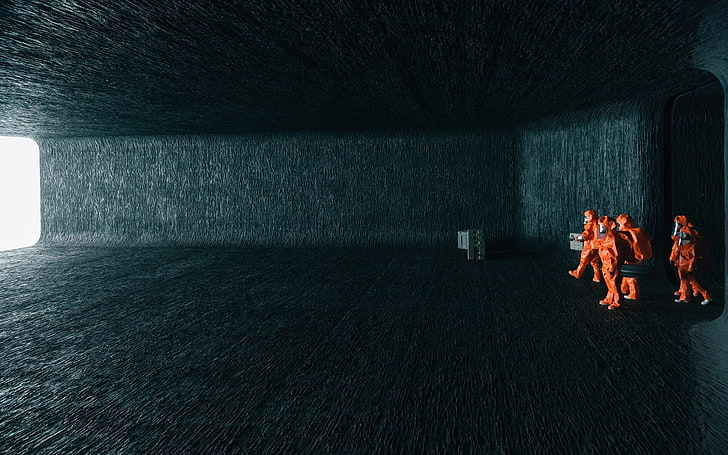
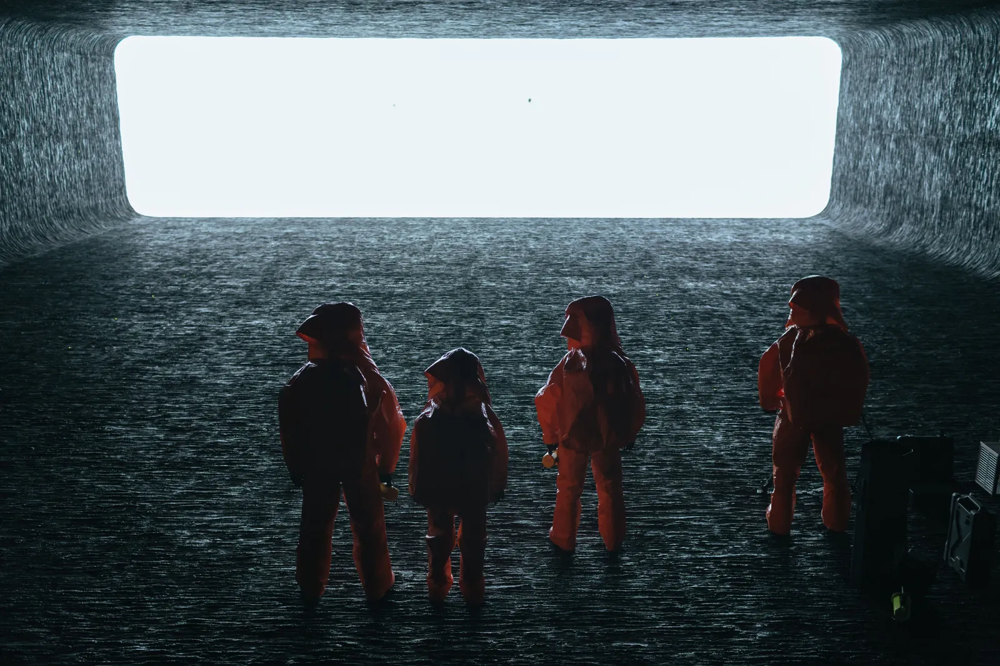
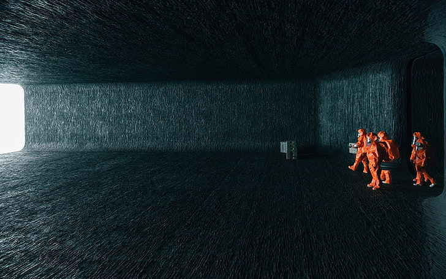
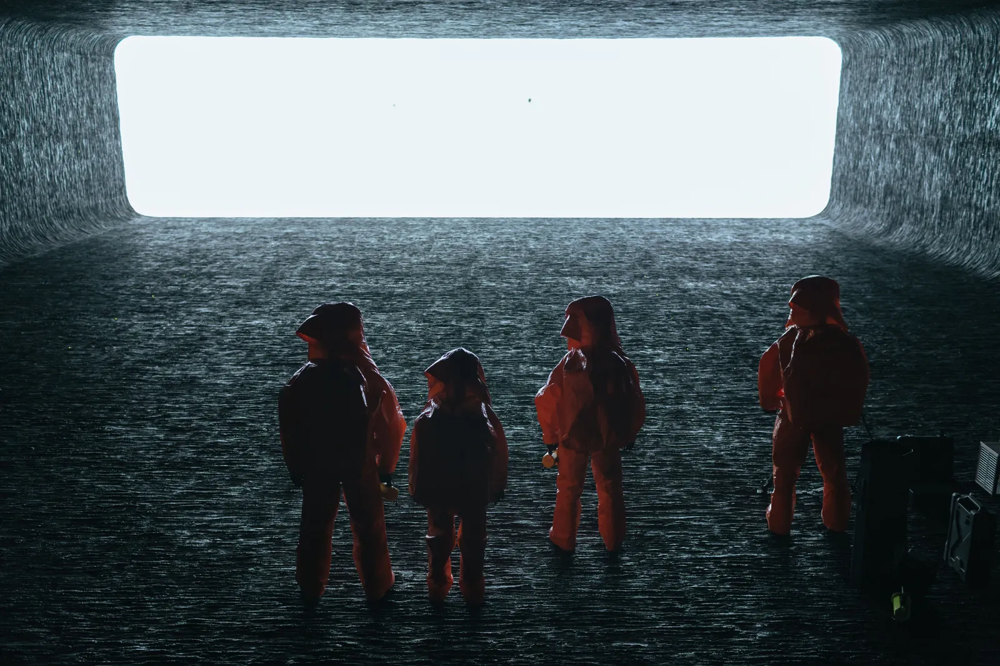

Arrival Movie Review
In the sprawling landscape of science fiction cinema, certain films defy the generic conventions of the genre to carve out a unique space for themselves, pushing the boundaries of narrative and intellectual exploration. One such standout is Denis Villeneuve's "Arrival," a gripping, cerebral drama that astoundingly combines hard science fiction with deep emotional resonance. Released in 2016, the film eschews the customary alien-invasion tropes to delve into an intricate and captivating exploration of language, time, and human connection.
The protagonist, Dr. Louise Banks, is brought to life by Amy Adams in a performance that is nuanced, empathetic, and powerful. As a linguistics professor, Dr. Banks is summoned to decode the indecipherable language of extraterrestrial beings whose spacecraft have appeared across the globe. Adams' portrayal of this academic-turned-unlikely-heroine forms the beating heart of the film. She embodies her character's intellectual prowess and emotional depth with a grace and conviction that captivates the audience from start to finish. Her journey into this alien language becomes our journey, too, pulling us into a fascinating exploration of communication and perception.
Villeneuve's genius in storytelling is on full display in "Arrival." The Quebec-born director, known for his thought-provoking narratives and striking visuals, abandons the predictable path of alien invasion tropes. In their place, he crafts an intellectually and emotionally charged narrative, merging complex theories of linguistics, the concept of non-linear time, and human psychology. Through this unique approach, he reframes the genre, transforming the alien encounter into a catalyst for a profound examination of the human condition.

A film's visuals can make or break its narrative, and in "Arrival," they are nothing short of breathtaking. Villeneuve, along with cinematographer Bradford Young, constructs a visual language as layered and intricate as the narrative itself. Each frame feels like a carefully crafted piece of art, from the haunting image of the alien spacecraft hovering above the ground to the intimate scenes in Dr. Banks' home. The film's visual elements — the blend of colors, the play of light and shadow, and the cinematic composition — complement the narrative, enhancing the mood and inviting viewers deeper into the story's world.
The screenplay, adapted by Eric Heisserer from Ted Chiang’s award-winning novella "Story of Your Life," deserves equal praise. The choice to employ non-linear storytelling is not just a stylistic flourish but a narrative necessity that binds the themes of language and time. It challenges audiences, disrupting our conventional understanding of time, and in doing so, reshapes our perception of the world, mirroring Dr. Banks' own transformation through her encounter with the alien language.

The concluding act of "Arrival" is a deeply emotional revelation that transcends its science-fiction framework. It's here that the true depth of Villeneuve's narrative genius is unveiled, connecting the film’s cerebral explorations of language and time with a visceral exploration of human emotion. It serves as a profound reminder of our shared experiences, of love and loss, of making choices knowing the joy and pain they will bring.
In summary, "Arrival" is more than a film — it is a sensory experience that challenges, provokes, and moves its viewers. It is a testament to the power of cinema in exploring complex concepts and inciting introspection. Its true genius lies in its ability to marry the cerebral with the emotional, the familiar with the alien. It's a narrative journey that transcends the screen, leaving the viewer with an enriched understanding of language, time, and our shared humanity. For any fan of thoughtful, poignant, and visually stunning cinema, "Arrival" is not just a film to watch — it's a film to experience and contemplate long after the final credits roll.
The protagonist, Dr. Louise Banks, is brought to life by Amy Adams in a performance that is nuanced, empathetic, and powerful. As a linguistics professor, Dr. Banks is summoned to decode the indecipherable language of extraterrestrial beings whose spacecraft have appeared across the globe. Adams' portrayal of this academic-turned-unlikely-heroine forms the beating heart of the film. She embodies her character's intellectual prowess and emotional depth with a grace and conviction that captivates the audience from start to finish. Her journey into this alien language becomes our journey, too, pulling us into a fascinating exploration of communication and perception.
Villeneuve's genius in storytelling is on full display in "Arrival." The Quebec-born director, known for his thought-provoking narratives and striking visuals, abandons the predictable path of alien invasion tropes. In their place, he crafts an intellectually and emotionally charged narrative, merging complex theories of linguistics, the concept of non-linear time, and human psychology. Through this unique approach, he reframes the genre, transforming the alien encounter into a catalyst for a profound examination of the human condition.

An example of the many beautiful shots littered throughout 'Arrival'
The screenplay, adapted by Eric Heisserer from Ted Chiang’s award-winning novella "Story of Your Life," deserves equal praise. The choice to employ non-linear storytelling is not just a stylistic flourish but a narrative necessity that binds the themes of language and time. It challenges audiences, disrupting our conventional understanding of time, and in doing so, reshapes our perception of the world, mirroring Dr. Banks' own transformation through her encounter with the alien language.

Amy Adam's team of scientists attempt to make first contact with the alien visitors
In summary, "Arrival" is more than a film — it is a sensory experience that challenges, provokes, and moves its viewers. It is a testament to the power of cinema in exploring complex concepts and inciting introspection. Its true genius lies in its ability to marry the cerebral with the emotional, the familiar with the alien. It's a narrative journey that transcends the screen, leaving the viewer with an enriched understanding of language, time, and our shared humanity. For any fan of thoughtful, poignant, and visually stunning cinema, "Arrival" is not just a film to watch — it's a film to experience and contemplate long after the final credits roll.